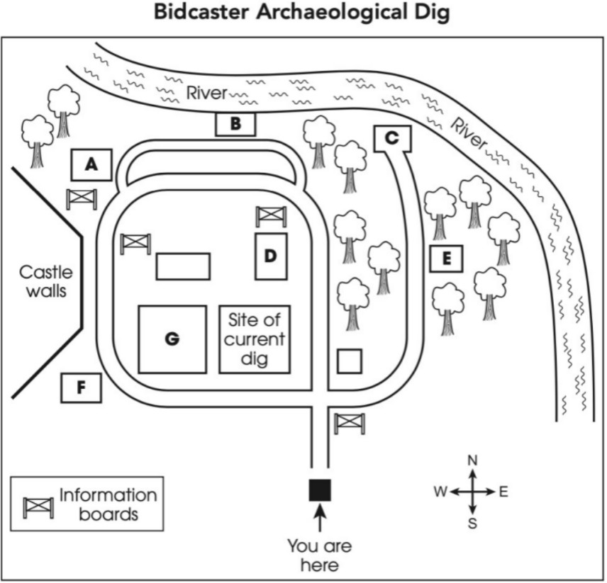

Phiếu trả lời Listening
Bấm số câu để nhảy tới câu đó. Bài làm được tự lưu trên máy này. Thời gian thi thật: khoảng 30 phút.
PART 1 Questions 1–10
Complete the notes below.
Write ONE WORD AND/OR A NUMBER for each answer.
Furniture rental companies
| Name of companies | Information about costs | Additional notes |
|---|---|---|
| Peak Rentals | Prices range from 105 dollars to dollars per room per month | The furniture is very Delivers in 1–2 days Special offer: free with every living room set |
| and Oliver | Mid-range prices 12% monthly fee for |
Also offers a cleaning service |
| Larch Furniture | Offers cheapest prices for renting furniture and items | Must have own Minimum contract length: six months |
| Rentals | See the for the most up-to-date prices | are allowed within 7 days of delivery |
PART 2 Questions 11–20
Questions 11–16
Choose the correct letter, A, B or C.
11 Who was responsible for starting the community project?
12 How was the gold coin found?
13 What led the archaeologists to believe there was an ancient village on this site?
14 What are the team still hoping to find?
15 What was found on the other side of the river from the castle?
16 What do the team plan to do after work ends this summer?
Questions 17–20
Label the map below.
Write the correct letter, A–F, next to Questions 17–20.

17 bridge foundations
18 rubbish pit
19 meeting hall
20 fish pond
PART 3 Questions 21–30
Questions 21–26
Choose the correct letter, A, B or C.
21 Finn was pleased to discover that their topic
22 Maya says a mistaken belief about theatre programmes is that
23 Finn was surprised that, in early British theatre, programmes
24 Maya feels their project should include an explanation of why companies of actors
25 Finn and Maya both think that, compared to nineteenth-century programmes, those from the eighteenth century
26 Maya doesn’t fully understand why, in the twentieth century,
Questions 27–30
What comment is made about the programme for each of the following shows?
Choose FOUR answers from the box and write the correct letter, A–F, next to Questions 27–30.
Comments about programme A Its origin is somewhat controversial. B It is historically significant for a country. C It was effective at attracting audiences. D It is included in a recent project. E It contains insights into the show. F It resembles an artwork. |
|---|
Shows
27 Ruy Blas
28 Man of La Mancha
29 The Tragedy of Jane Shore
30 The Sailors’ Festival
PART 4 Questions 31–40
Complete the notes below.
Write ONE WORD ONLY for each answer.
Inclusive design Definition
Examples of inclusive design
To assist the elderly:
Impact of non-inclusive designs
|
|---|
Phiếu trả lời Reading
Bấm số câu để nhảy tới câu đó. Bài làm được tự lưu trên máy này. Thời gian thi thật: 60 phút.
READING PASSAGE 1 Questions 1–13
You should spend about 20 minutes on Questions 1–13, which are based on Reading Passage 1 below.
Frozen Food
A US perspective on the development of the frozen food industry
At some point in history, humans discovered that ice preserved food. There is evidence that winter ice was stored to preserve food in the summer as far back as 10,000 years ago. Two thousand years ago, the inhabitants of South America’s Andean mountains had a unique means of conserving potatoes for later consumption. They froze them overnight, then trampled them to squeeze out the moisture, then dried them in the sun. This preserved their nutritional value-if not their aesthetic appeal.
Natural ice remained the main form of refrigeration until late in the 19th century. In the early 1800s, ship owners from Boston, USA, had enormous blocks of Arctic ice towed all over the Atlantic for the purpose of food preservation. In 1851, railroads first began putting blocks of ice in insulated rail cars to send butter from Ogdensburg, New York, to Boston.
Finally, in 1870, Australian inventors found a way to make ‘mechanical ice’. They used a compressor to force a gas-ammonia at first and later Freon-through a condenser. The compressed gas gave up some of its heat as it moved through the condenser. Then the gas was released quickly into a low-pressure evaporator coil where it became liquid and cold. Air was blown over the evaporator coil and then this cooled air passed into an insulated compartment, lowering its temperature to freezing point.
Initially, this process was invented to keep Australian beer cool even in hot weather. But Australian cattlemen were quick to realize that, if they could put this new invention on a ship, they could export meat across the oceans. In 1880, a shipment of Australian beef and mutton was sent, frozen, to England. While the food frozen this way was still palatable, there was some deterioration. During the freezing process, crystals formed within the cells of the food, and when the ice expanded and the cells burst, this spoilt the flavor and texture of the food.
The modern frozen food industry began with the indigenous Inuit people. In 1912, a biology student in Massachusetts, USA, named Clarence Birdseye, ran out of money and went to Labrador in Canada to trap and trade furs. While he was there, he became fascinated with how the Inuit would quickly freeze fish in the Arctic air. The fish looked and tasted fresh even months later.
Birdseye returned to the USA in 1917 and began developing mechanical freezers capable of quick-freezing food. Birdseye methodically kept inventing better freezers and gradually built a business selling frozen fish from Gloucester, Massachusetts. In 1929, his business was sold and became General Foods, but he stayed with the company as director of research, and his division continued to innovate.
Birdseye was responsible for several key innovations that made the frozen food industry possible. He developed quick-freezing techniques that reduced the damage that crystals caused, as well as the technique of freezing the product in the package it was to be sold in. He also introduced the use of cellophane, the first transparent material for food packaging, which allowed consumers to see the quality of the product. Birdseye products also came in convenient size packages that could be prepared with a minimum of effort.
But there were still obstacles. In the 1930s, few grocery stores could afford to buy freezers for a market that wasn’t established yet. So, Birdseye leased inexpensive freezer cases to them. He also leased insulated railroad cars so that he could ship his products nationwide. However, few consumers had freezers large enough or efficient enough to take advantage of the products.
Sales increased in the early 1940s, when World War II gave a boost to the frozen food industry because tin was being used for munitions. Canned foods were rationed to save tin for the war effort, while frozen foods were abundant and cheap. Finally, by the 1950s, refrigerator technology had developed far enough to make these appliances affordable for the average family. By 1953, 33 million US families owned a refrigerator, and manufacturers were gradually increasing the size of the freezer compartments in them.
1950s families were also looking for convenience at mealtimes, so the moment was right for the arrival of the ‘TV Dinner’. Swanson Foods was a large, nationally recognized producer of canned and frozen poultry. In 1954, the company adapted some of Birdseye’s freezing techniques, and with the help of a clever name and a huge advertising budget, it launched the first ‘TV Dinner’. This consisted of frozen turkey, potatoes and vegetables served in the same segmented aluminum tray that was used by airlines. The product was an instant success. Within a year, Swanson had sold 13 million TV dinners. American consumers couldn’t resist the combination of a trusted brand name, a single-serving package and the convenience of a meal that could be ready after only 25 minutes in a hot oven. By 1959, Americans were spending $2.7 billion annually on frozen foods, and half a billion of that was spent on ready-prepared meals such as the TV Dinner.
Today, the US frozen food industry has a turnover of over $67 billion annually, with $26.6 billion of that sold to consumers for home consumption. The remaining $40 billion in frozen food sales come through restaurants, cafeterias, hospitals and schools, and that represents a third of the total food service sales.
Questions 1–7
Complete the notes below.
Choose ONE WORD ONLY from the passage for each answer.
The history of frozen food 2,000 years ago, South America
1851, USA
1880, Australia
1917 onwards, USA
Early 1940s, USA
1950s, USA
|
|---|
Questions 8–13
Do the following statements agree with the information given in Reading Passage 1?
In boxes 8–13 on your answer sheet, write
TRUE if the statement agrees with the information
FALSE if the statement contradicts the information
NOT GIVEN if there is no information on this
8 The ice transportation business made some Boston ship owners very wealthy in the early 1800s.
9 A disadvantage of the freezing process invented in Australia was that it affected the taste of food.
10 Clarence Birdseye travelled to Labrador in order to learn how the Inuit people froze fish.
11 Swanson Foods invested a great deal of money in the promotion of the TV Dinner.
12 Swanson Foods developed a new style of container for the launch of the TV Dinner.
13 The US frozen food industry is currently the largest in the world.
READING PASSAGE 2 Questions 14–26
You should spend about 20 minutes on Questions 14–26, which are based on Reading Passage 2 below.
Can the planet’s coral reefs be saved?
A Conservationists have put the final touches to a giant artificial reef they have been assembling at the world-renowned Zoological Society of London (London Zoo). Samples of the planet’s most spectacular corals - vivid green branching coral, yellow scroll, blue ridge and many more species - have been added to the giant tank along with fish that thrive in their presence: blue tang, clownfish and many others. The reef is in the zoo’s new gallery, Tiny Giants, which is dedicated to the minuscule invertebrate creatures that sustain life across the planet. The coral reef tank and its seven-metre-wide window form the core of the exhibition. ‘Coral reefs are the most diverse ecosystems on Earth and we want to show people how wonderful they are,’ said Paul Pearce-Kelly, senior curator of invertebrates and fish at the Zoological Society of London. ‘However, we also want to highlight the research and conservation efforts that are now being carried out to try to save them from the threat of global warming.’ They want people to see what is being done to try to save these wonders.
B Corals are composed of tiny animals, known as polyps, with tentacles for capturing small marine creatures in the sea water. These polyps are transparent but get their brilliant tones of pink, orange, blue, green, etc. from algae that live within them, which in turn get protection, while their photosynthesising of the sun’s rays provides nutrients for the polyps. This comfortable symbiotic relationship has led to the growth of coral reefs that cover 0.1% of the planet’s ocean bed while providing homes for more than 25% of marine species, including fish, molluscs, sponges and shellfish.
C As a result, coral reefs are often described as the ‘rainforests of the sea’, though the comparison is dismissed by some naturalists, including David Attenborough. ‘People say you cannot beat the rainforest,’ Attenborough has stated. ‘But that is simply not true. You go there and the first thing you think is: where ... are the birds? Where are the animals? They are hiding in the trees, of course. No, if you want beauty and wildlife, you want a coral reef. Put on a mask and stick your head under the water. The sight is mind-blowing.’
D Unfortunately, these majestic sights are now under very serious threat, with the most immediate problem coming in the form of thermal stress. Rising ocean temperatures are triggering bleaching events that strip reefs of their colour and eventually kill them. And that is just the start. Other menaces include ocean acidification, sea level increase, pollution by humans, deoxygenation and ocean current changes, while the climate crisis is also increasing habitat destruction. As a result, vast areas - including massive chunks of Australia’s Great Barrier Reef - have already been destroyed, and scientists advise that more than 90% of reefs could be lost by 2050 unless urgent action is taken to tackle global heating and greenhouse gas emissions.
Pearce-Kelly says that coral reefs have to survive really harsh conditions wave erosion and other factors. And ‘when things start to go wrong in the oceans, then corals will be the first to react. And that is exactly what we are seeing now. Coral reefs are dying and they are telling us that all is not well with our planet.’
E However, scientists are trying to pinpoint hardy types of coral that could survive our overheated oceans, and some of this research will be carried out at London Zoo. ‘Behind our coral reef tank we have built laboratories where scientists will be studying coral species,’ said Pearce-Kelly. One aim will be to carry out research on species to find those that can survive best in warm, acidic waters. Another will be to try to increase coral breeding rates. ‘Coral spawn just once a year,’ he added. ‘However, aquarium-based research has enabled some corals to spawn artificially, which can assist coral reef restoration efforts. And if this can be extended for all species, we could consider the launching of coral-spawning programmes several times a year. That would be a big help in restoring blighted reefs.’
F Research in these fields is being conducted in laboratories around the world, with the London Zoo centre linked to this global network. Studies carried out in one centre can then be tested in others. The resulting young coral can then be displayed in the tank in Tiny Giants. ‘The crucial point is that the progress we make in making coral better able to survive in a warming world can be shown to the public and encourage them to believe that we can do something to save the planet’s reefs,’ said Pearce-Kelly. ‘Saving our coral reefs is now a critically important ecological goal.’
Questions 14–19
Reading Passage 2 has six sections, A–F.
Choose the correct heading for each section from the list of headings below.
Write the correct number, i–vii, in boxes 14–19 on your answer sheet.
List of headings i Tried and tested solutions ii Cooperation beneath the waves iii Working to lessen the problems iv Disagreement about the accuracy of a certain phrase v Two clear educational goals vi Promoting hope vii A warning of further trouble ahead |
|---|
14 Section A
15 Section B
16 Section C
17 Section D
18 Section E
19 Section F
Questions 20 and 21
Choose TWO letters, A–E.
20–21 Which TWO of these causes of damage to coral reefs are mentioned by the writer of the text?
Questions 22 and 23
Choose TWO letters, A–E.
22–23 Which TWO of the following statements are true of the researchers at London Zoo?
Questions 24–26
Complete the sentences below.
Choose ONE WORD ONLY from the passage for each answer.
Corals have a number of which they use to collect their food.
Algae gain from being inside the coral.
Increases in the warmth of the sea water can remove the from coral.
READING PASSAGE 3 Questions 27–40
You should spend about 20 minutes on Questions 27–40, which are based on Reading Passage 3 below.
Robots and us
Three leaders in their fields answer questions about our relationships with robots
When asked ‘Should robots be used to colonise other planets?’, cosmology and astrophysics Professor Martin Rees said he believed the solar system would be mapped by robotic craft by the end of the century. ‘The next step would be mining of asteroids, enabling fabrication of large structures in space without having to bring all the raw materials from Earth. I think this is more realistic and benign than the “terraforming”* of planets.’ He maintains that colonised planets ‘should be preserved with a status that is analogous to Antarctica here on Earth.’
On the question of using robots to colonise other planets and exploit mineral resources, engineering Professor Daniel Wolpert replied, ‘I don’t see a pressing need to colonise other planets unless we can bring [these] resources back to Earth. The vast majority of Earth is currently inaccessible to us. Using robots to gather resources nearer to home would seem to be a better use of our robotic tools.’
Meanwhile, for anthropology Professor Kathleen Richardson, the idea of ‘colonisation’ of other planets seemed morally dubious: ‘I think whether we do something on Earth or on Mars we should always do it in the spirit of a genuine interest in “the Other”, not to impose a particular model, but to meet “the Other”.”
In response to the second question, ‘How soon will machine intelligence outstrip human intelligence?’, Rees mentions robots that are advanced enough to beat humans at chess, but then goes on to say, ‘Robots are still limited in their ability to sense their environment: they can’t yet recognise and move the pieces on a real chessboard as cleverly as a child can. Later this century, however, their more advanced successors may relate to their surroundings, and to people, as adeptly as we do. Moral questions then arise. Should we feel guilty about exploiting [sophisticated robots]? Should we fret if they are underemployed, frustrated, or bored?’
Wolpert’s response to the question about machine intelligence outstripping human intelligence was this: ‘In a limited sense it already has. Machines can already navigate, remember and search for items with an ability that far outstrips humans. However, there is no machine that can identify visual objects or speech with the reliability and flexibility of humans. Expecting a machine close to the creative intelligence of a human within the next 50 years would be highly ambitious.’
Richardson believes that our fear of machines becoming too advanced has more to do with human nature than anything intrinsic to the machines themselves. In her view, it stems from humans’ tendency to personify inanimate objects: we create machines based on representations of ourselves, imagine that machines think and behave as we do, and therefore see them as an autonomous threat. ‘One of the consequences of thinking that the problem lies with machines is that we tend to imagine they are greater and more powerful than they really are and subsequently they become so.’
This led on to the third question, ‘Should we be scared by advances in artificial intelligence?’ To this question, Rees replied, ‘Those who should be worried are the futurologists who believe in the so-called “singularity”.** And another worry is that we are increasingly dependent on computer networks, and that these could behave like a single “brain” with a mind of its own, and with goals that may be contrary to human welfare. I think we should ensure that robots remain as no more than “idiot savants” lacking the capacity to outwit us, even though they may greatly surpass us in the ability to calculate and process information.’
Wolpert’s response was to say that we have already seen the damaging effects of artificial intelligence in the form of computer viruses. ‘But in this case,’ he says, ‘the real intelligence is the malicious designer. Critically, the benefits of computers outweigh the damage that computer viruses cause. Similarly, while there may be misuses of robotics in the near future, the benefits that they will bring are likely to outweigh these negative aspects.’
Richardson’s response to this question was this: ‘We need to ask why fears of artificial intelligence and robots persist; none have in fact risen up and challenged human supremacy.’ She believes that as robots have never shown themselves to be a threat to humans, it seems unlikely that they ever will. In fact, she went on, ‘Not all fear [robots]; many people welcome machine intelligence.’
In answer to the fourth question, “What can science fiction tell us about robotics?’, Rees replied, ‘I sometimes advise students that it’s better to read first-rate science fiction than second-rate science – more stimulating, and perhaps no more likely to be wrong.’
As his response, Wolpert commented, ‘Science fiction has often been remarkable at predicting the future. Science fiction has painted a vivid spectrum of possible futures, from cute and helpful robots to dystopian robotic societies. Interestingly, almost no science fiction envisages a future without robots.’
Finally, on the question of science fiction, Richardson pointed out that in modern society, people tend to think there is reality on the one hand, and fiction and fantasy on the other. She then explained that the division did not always exist, and that scientists and technologists made this separation because they wanted to carve out the sphere of their work. ‘But the divide is not so clear cut, and that is why the worlds seem to collide at times,’ she said. ‘In some cases, we need to bring these different understandings together to get a whole perspective. Perhaps then, we won’t be so frightened that something we create as a copy of ourselves will be a [threat] to us.’
* terraforming: modifying a planet’s atmosphere to suit human needs
** singularity: the point when robots will be able to start creating ever more sophisticated versions of themselves
Questions 27–33
Look at the following statements (Questions 27–33) and the list of experts below.
Match each statement with the correct expert, A, B or C.
NB You may use any letter more than once.
27 For our own safety, humans will need to restrict the abilities of robots.
28 The risk of robots harming us is less serious than humans believe it to be.
29 It will take many decades for robot intelligence to be as imaginative as human intelligence.
30 We may have to start considering whether we are treating robots fairly.
31 Robots are probably of more help to us on Earth than in space.
32 The ideas in high-quality science fiction may prove to be just as accurate as those found in the work of mediocre scientists.
33 There are those who look forward to robots developing greater intelligence.
List of Experts A Martin Rees B Daniel Wolpert C Kathleen Richardson |
|---|
Questions 34–36
Complete each sentence with the correct ending, A–D, below.
34 Richardson and Rees express similar views regarding the ethical aspect of
35 Rees and Wolpert share an opinion about the extent of
36 Wolpert disagrees with Richardson on the question of
A robots to explore outer space. B advances made in machine intelligence so far. C changes made to other planets for our own benefit. D the harm already done by artificial intelligence. |
|---|
Questions 37–40
Choose the correct letter, A, B, C or D.
37 What point does Richardson make about fear of machines?
38 What potential advance does Rees see as a cause for concern?
39 What does Wolpert emphasise in his response to the question about science fiction?
40 What is Richardson doing in her comment about reality and fantasy?